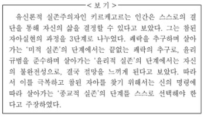

지문 보기(문제16~문제20)

19. 윗글과 <보기>를 활용하여 '사르트르'와 '키르케고르'의 입장을 비교한 내용으로 적절하지 않은 것은?
1. 키르케고르와 달리 사르트르는 시에 의존하지 않는 삶을 추구했겠군.
2. 사르트르와 달리 키르케고르는 자아실현의 과정이 단계별로 진행된다고 생각했겠군.
3. 사르트르와 키르케고르는 모두 인간이 자신의 삶을 주체적으로 결정할 수 있다고 믿었겠군.
4. 사르트르와 키르케고르는 모두 참된 자아를 찾기 위해서 극복해야 할 대상이 있다고 여겼겠군.
5. 사르트르와 키르케고르는 모두 윤리 규범과 같은 사회적 관습을 지키는 것이 중요하다고 여겼겠군.